What is the Internet?
Before we delve into developers.soundcloud.com, let's discuss what API means.
The Internet is a network made up of hundreds of millions of interconected devices referred to as hosts (also referred to as end-systems.) They are referred to as end systems because they sit at the edge of the Internet, and they are referred to as hosts because they host applications such as a Web browser program, a Web server program, or an e-mail server program.
End-systems are connected by communication links (physical media like coaxil cable, copper wire, optical fiber and radio spectrums) and packet-switches.
The access network is the network that physically connects an end-system to the first router (aka the edge router) on the path from the end system to any distant system.
Packet Switches
When one end-system has to send data to another end-system, the sending system segments the data and adds header bytes to each segment. The resulting packages of information (packets) are sent through the network to the end system, where they are reassembled into the original data.
A packet switch takes a package that's arriving into an incoming communication link, and forwards it to an outgoing communication link.
The two most prominent types of packet switches are routers and link-layer switches.
Routers are typically used in the network's core.
Link-layer switches are typically used to access networks.
The series of communication links and package switches that a packet goes through on its way from a sending to recieving system is typically called a route or path.
ISPs
End systems access the Internet through Internet Service Providers (ISPs).
Each ISP is in itself a network of packet switches and communication links. ISPs provide Internet access to both users and content-providers, connecting websites directly to the Internet.
Lower-tier ISPs are connected through national and international upper-tier ISPs, such as Level 3 Communications, AT&T, Sprint, and NTT. An upper-tier ISP consists of a high-speed router interconnected with high-speed fiber-optic links.
End-systems, packet-switches and more run protocols that control the sending and receiving of information within the Internet.
Two important protocols:
- The Transmission Control Protocol(TCP)
- The Internet Protocol (IP)
Together, these are known as TC/IP.
Internet Standards are developed by the Internet Engineering Task Force (IETF). The IETF standards documetns are called requests for comments (RFCs). RFCs define protocols such as TCP, IP, HTTP (for web), and SMTP (for email). There are currently more than 6,000 RFCs.
The IEE 802 LAN/MAN Standards Committee specifies the Ethernet and wireless WiFi standards.
A Service Description
Services like electonric mail, web surfing, social networks, instant messeging, video streaming, P2P file sharing, etc. are said to be distributed applications. This is because they involve multiple end systems that exchange data with each other. Internet applications run on end systems-- they do not run in the packet switches in the network core. Although packet switches facilitate the exchange of data among end systems, they are not concerned with the application that is the source or sink of the data.
To start, we're going to assume that you already have an Amazon Web Services account. To host a simple website with javascript and html, simply go to the AWS Management Console and click on "S3".
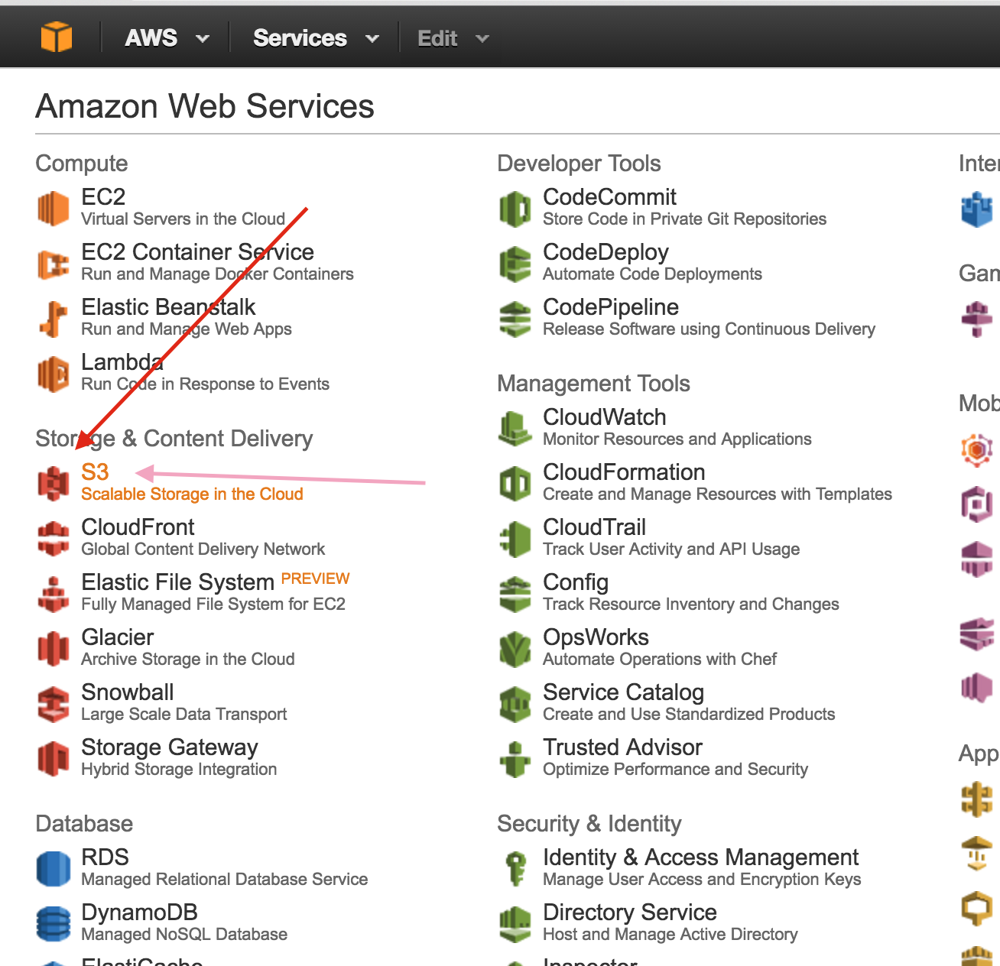Then click "Create a bucket." You should be see something like this:
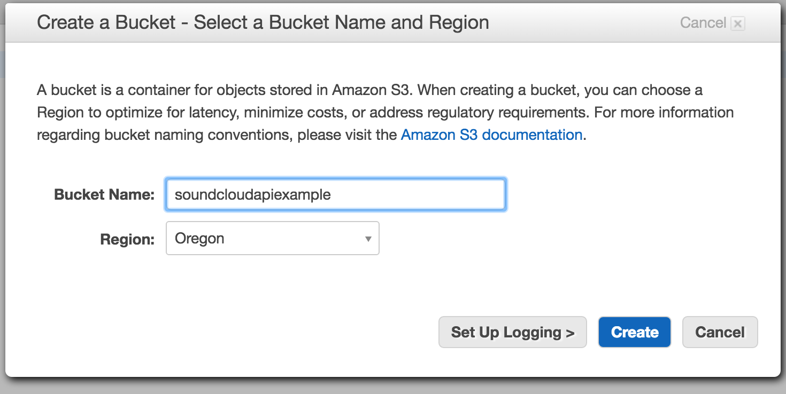Choose a name and a region and click "create."
Next you will arrive at a page like this:
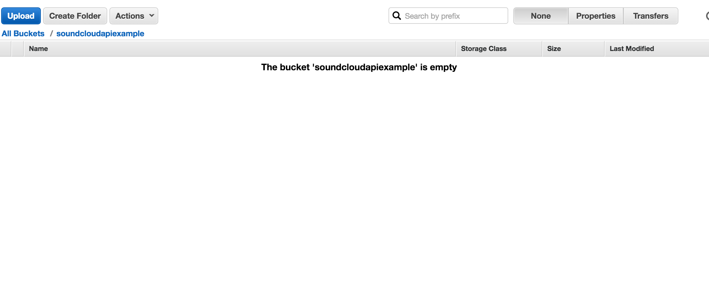Hit upload and navigate to the directory that you put our index.html file in to upload it:
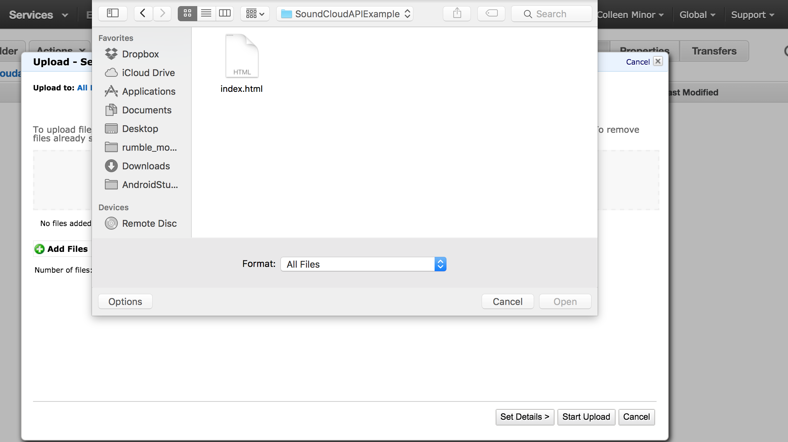Now that the file is ready hit upload once more:
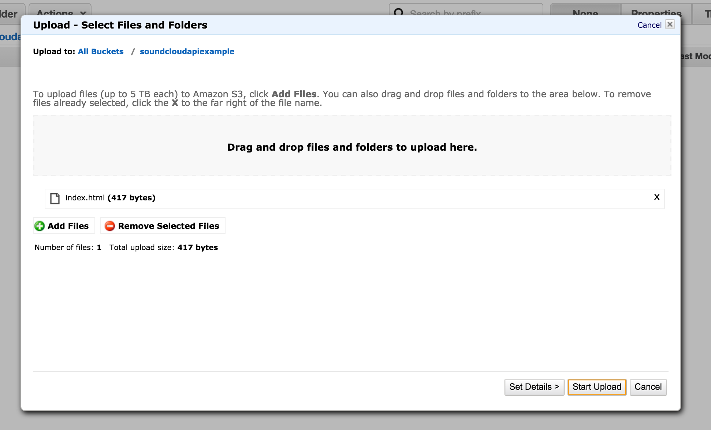Next, in order to make your file accessible, you need to right-click on it and hit make public:
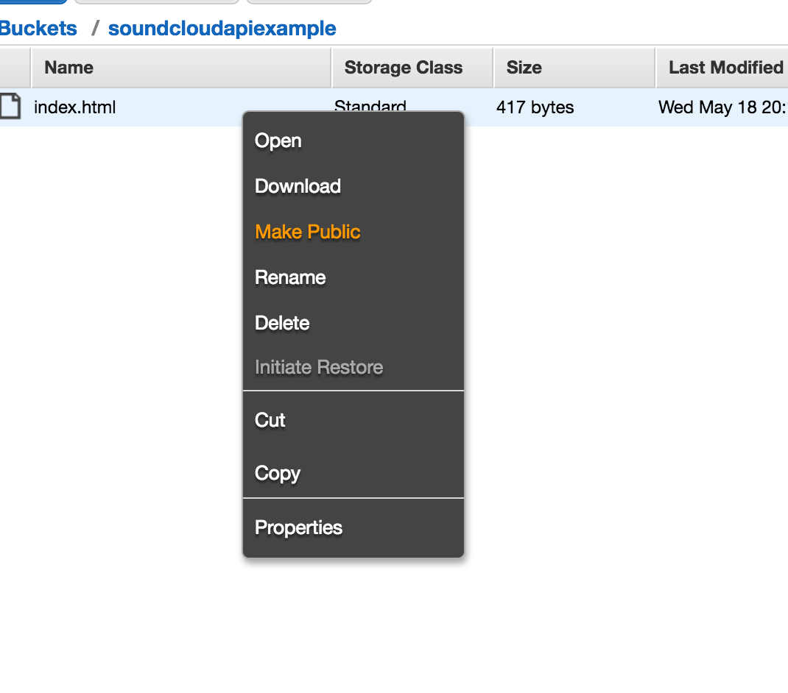Finally, to retreive the url, right click and hit properties:
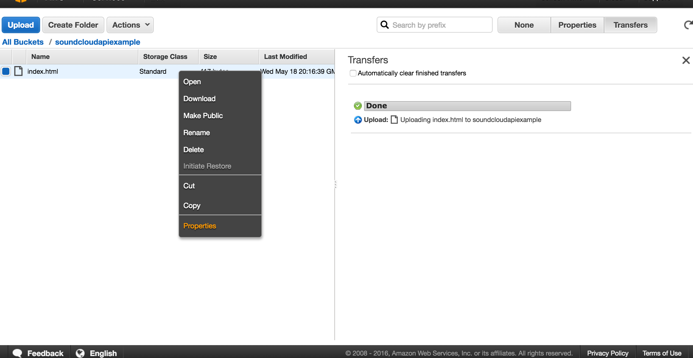And now the url of your index file is visible in the right-hand side of the screen, next to "link":
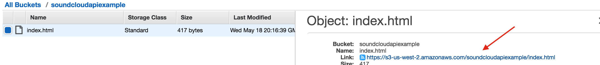That's the first URL that we need to register our app. Let's enter it now.
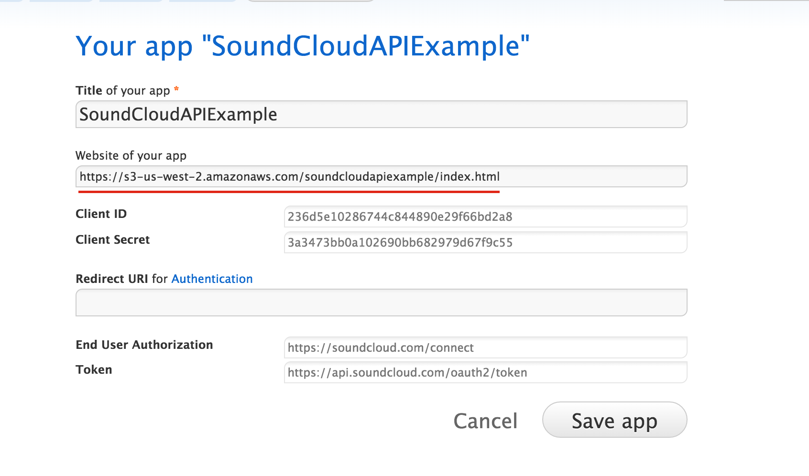Creating the Redirect URI
Now it's time to create the redirect URI.
This is a live file which will be contacted by SoundCloud's API, so that it can then send an authentication token back to our application. Once received, our application will be able to use this user token via callback functions. We'll go over that last.
Navigate to the folder on your computer that the index.html file is saved in and create a new html file. In this example it will be called callback.html. In callback.html, copy or copy/paste this code:
Now save the file and upload callback.html to the same bucket as you uploaded index.html too, and don't forget to also make this file public.
Just like you did with index.html, right click and hit "properties" to grab the url. It should be the same as the last url except that index.html should be replaced with callback.html.
Now paste that url into your app at soundcloud.you.apps and hit "Save app:":
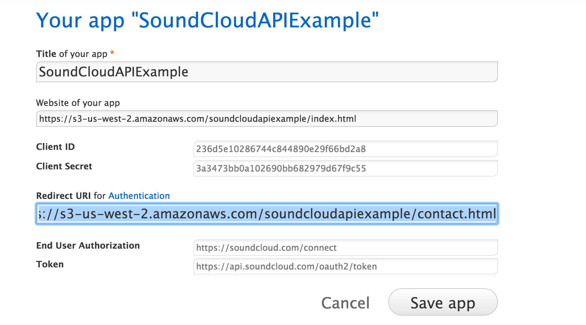Adding the Javascript
Finally, we're going to add some javascript to our index file that will use SoundCloud's HTTP API in order to prompt the user to connect their soundcloud account to our web app via a pop-up window. Add this javascript to index.html just before the closing
<script src="https://connect.soundcloud.com/sdk/sdk-3.0.0.js"></script>
<script>
SC.initialize({
client_id: 'YOUR_CLIENT_ID',
redirect_uri: 'http://example.com/callback'
});
// initiate auth popup
SC.connect().then(function() {
return SC.get('/me');
}).then(function(me) {
alert('Hello, ' + me.username);
});
</script>
On the first line we gain access to the SoundCloud API, allowing us to access all of the functions and object types in this file. 'SC' is a type of object that exists in the SoundCloud API, which we link to as a javascript source on the first line.
If the credentials are valid than SC.connect() will initialize a connection to the user by contacting the redirect uri. If the redirect uri is valid than a Promise object is returned.
The next word, then, refers to the successful return of that Promise. If the connection is made and the promise is fulfilled, a request for the user (in the form of SC.get('/me')) is made... and finally the next then refers to the fulfillment of that Promise, upon success of which it will alert, "Hello, [username]!"
If the callback.html page does not close soon after and show the "hello" alert, there was probably a problem with the call-back.
If an "invalid uri" window pops up instead of a log-in window, there was probably a problem with authentication.
YOUR_CLIENT_ID should be replaced with the string of letters and numbers next to "client id" in your app. A client id serves a similar purpose to an API key: it prevents people from abusing the system by spamming it with requests, and in this case it adds security as well.
http://example.com/callback should be replaced with the live url to your callback file.
Hopefully you have now saved them where you registered your app: 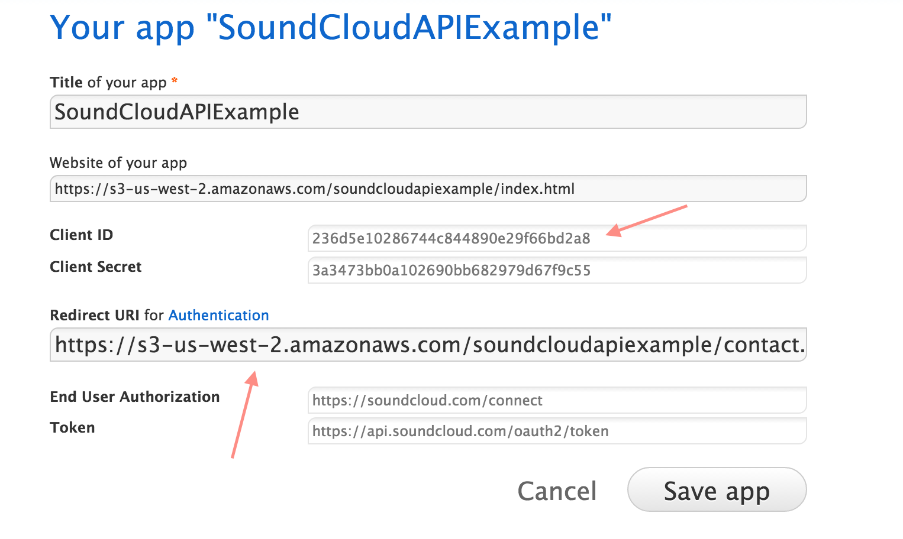
Once you've done that, hit save and then re-upoad index.html to your S3 bucket (don't forget to make it public again!).
Now, assuming all has gone well, and you turn off your pop-up blocker, when you enter your web-page you should be greeted by this:
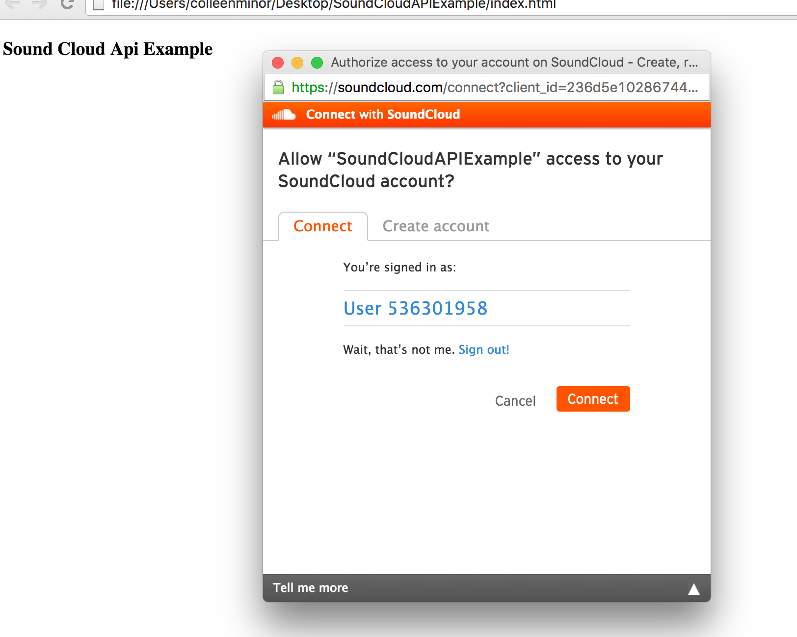Your web app is now all set to connect to the SoundCloud accounts of visiting users! There are many more things you could choose to do with this API, from allowing users to upload music to their SoundCloud accounts or play their music from your web app. Now that you've gotten started, check the documentation at developers.soundcloud.com to see what else you can do!
Thank you for doing my tutorial!
-Colleen